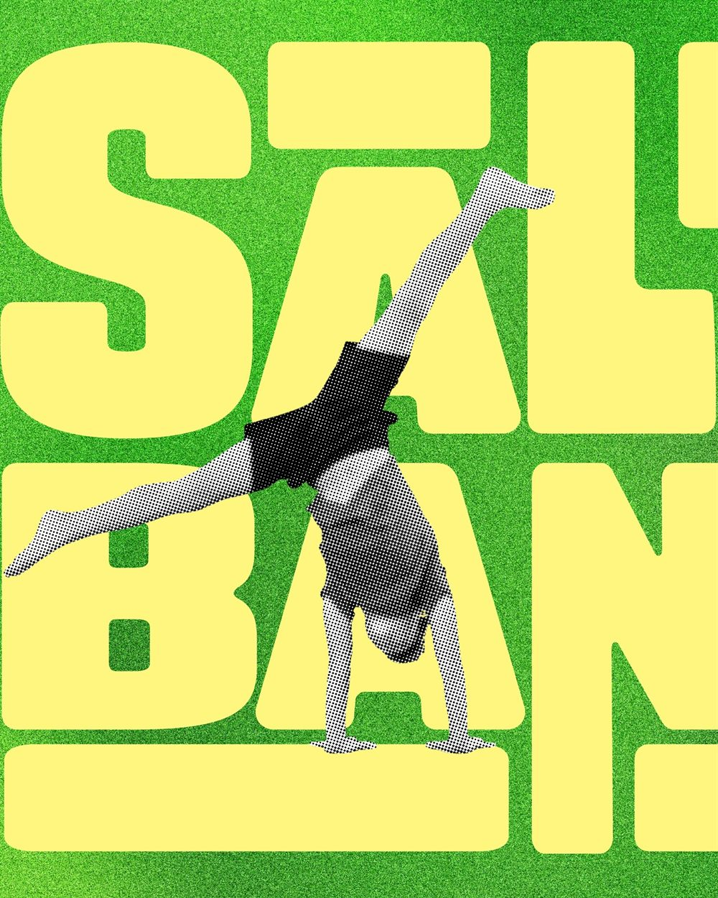

IdentidadSaltim
banqui
banqui
Somos La Brega. Convertimos ideas en marcas con carácter: estrategia, identidad y dirección de arte para negocios que no quieren pasar desapercibidos.
Un estudio pequeño y canario, obsesionado con el concepto y el detalle. No buscamos que tu marca grite más alto, sino que diga algo que merezca la pena escuchar. Menos humo, más significado.
↑ Baja para revelarlo · o pásale el ratón por encima
Posicionamiento, territorio, nombre y tono de voz.
Logotipo, sistema gráfico y manual de marca vivo.
El universo visual: fotografía, textura, ritmo.
Webs rápidas, bonitas y con personalidad.
Que la marca se mueva y llene el feed con criterio.
Que el producto se venda solo desde la estantería.

Identidad Branding + Motion
Branding + Motion Campaña
Campaña Social
SocialAntes de dibujar nada, entendemos qué quieres decir. La idea manda; lo bonito viene después (y viene).
Nada de humo ni palabras raras. Te explicamos todo claro y te enseñamos el proceso por el camino.
Somos pequeños a propósito. Trabajas directamente con quien diseña, no con un intermediario.